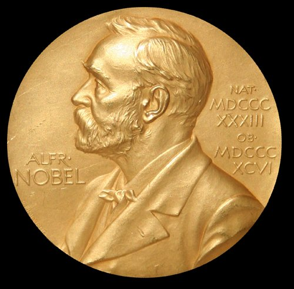

नोबेल पुरस्कार 2026: साहित्य का नोबेल कनाडा की एनी कार्सन को — प्राचीन परंपरा से नए साहित्य की रचना

साहित्य का नोबेल पदक — 2026 में यह सम्मान कनाडा की कवयित्री एनी कार्सन को प्राचीन शास्त्रीय परंपरा के साथ खेलभावी संवाद के माध्यम से समकालीन साहित्य के नए रूप रचने के लिए दिया गया। (छवि: विकिमीडिया कॉमन्स)
स्टॉकहोम की स्वीडिश अकादमी ने 8 अक्टूबर 2026 को साहित्य का नोबेल पुरस्कार घोषित कर दिया है। इस वर्ष यह सम्मान कनाडा की 76 वर्षीय कवयित्री एनी कार्सन को मिला है। अकादमी ने उन्हें "उनके साहसिक और नवोन्मेषी रचना-संसार के लिए, जिसने प्राचीन शास्त्रीय परंपरा के साथ खेलभावी संवाद के माध्यम से समकालीन साहित्य के नए रूप रचे हैं" — इस प्रशस्ति-पत्र के साथ चुना है।
एनी कार्सन कविता के साथ-साथ निबंध और अनुवाद के क्षेत्र में भी जानी जाती हैं; वे प्राचीन यूनानी-रोमन विद्या की विदुषी हैं और टोरंटो विश्वविद्यालय की पूर्व छात्रा हैं। उनकी चर्चित पुस्तकों में "ऑटोबायोग्राफी ऑफ़ रेड" और "इरोस द बिटरस्वीट" शामिल हैं, जिनमें उन्होंने प्राचीन पुराणकथाओं को आधुनिक कविता और गद्य से मिलाकर साहित्य की नई विधाएँ रचीं।
पुरस्कार राशि: 1.2 करोड़ स्वीडिश क्रोनर (11.5 करोड़ रुपये से अधिक) — इस वर्ष साहित्य का नोबेल केवल एनी कार्सन को मिला है, इसलिए पूरी राशि उन्हें ही मिलेगी।
पिछला वर्ष: 2025 का साहित्य नोबेल हंगरी के लेखक लाज़लो क्रास्नाहोर्कई को दिया गया था।
नोबेल सप्ताह जारी: साहित्य के बाद शांति (9 अक्टूबर) और अर्थशास्त्र (12 अक्टूबर) के पुरस्कारों की घोषणा होगी।
स्रोत: स्वीडिश अकादमी; टोरंटो विश्वविद्यालय; nobelprize.org